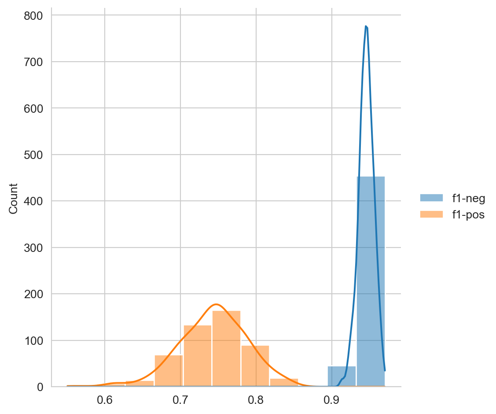
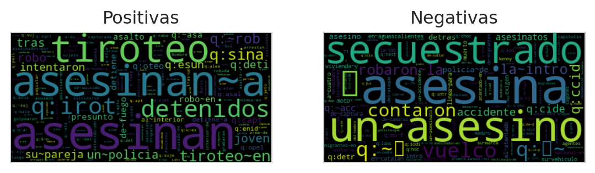
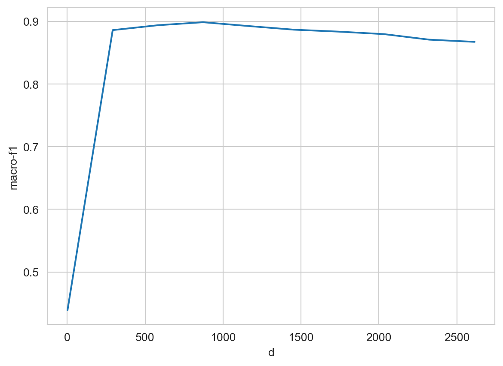
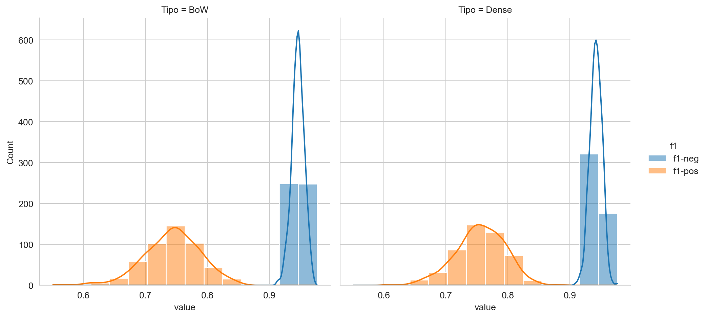
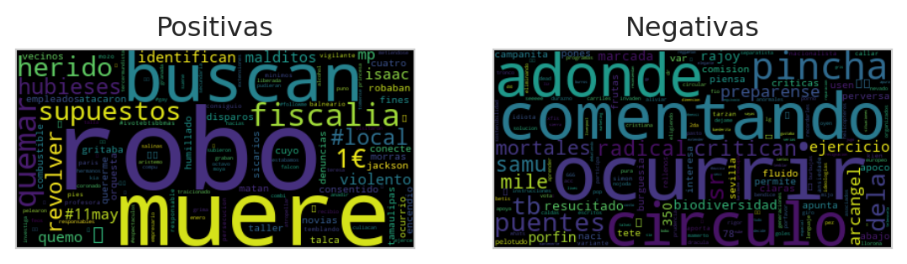
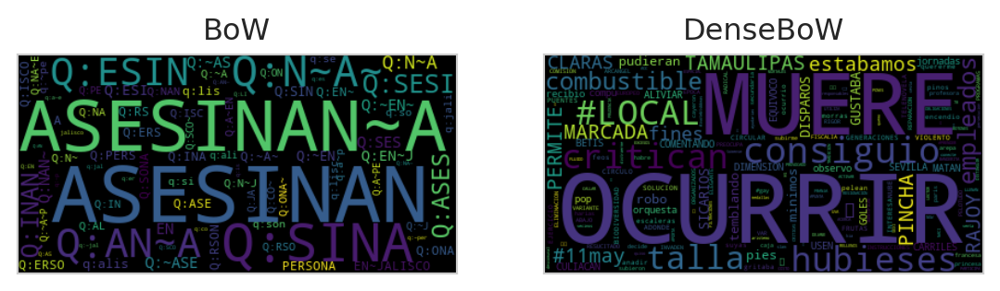
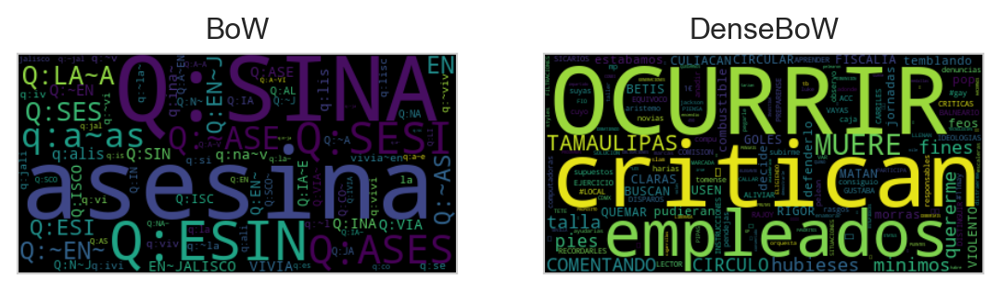
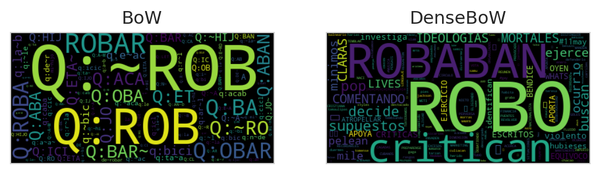

from EvoMSA import BoW,\
DenseBoW,\
StackGeneralization
from microtc.utils import tweet_iterator
from IngeoML import CI, SelectFromModelCV
from sklearn.metrics import f1_score,\
recall_score,\
precision_score
from wordcloud import WordCloud
import numpy as np
import pandas as pd
from matplotlib import pylab as plt
import seaborn as sns6 Mezcla de Modelos
El objetivo de la unidad es
Paquetes usados
Video explicando la unidad
6.1 Introducción
flowchart LR
Repr([Representación]) -- Clasificación --> Clasificador[Clasificador]
Repr -- Regresión --> Regresor[Regresor]
Clasificador --> Prediccion([Predicción])
Regresor --> Prediccion
El conjunto de datos se puede conseguir en la página de Delitos aunque en esta dirección es necesario poblar los textos dado que solamente se encuentra el identificador del Tweet.
Para leer los datos del conjunto de entrenamiento y prueba se utilizan las siguientes instrucciones. En la variable D se tiene los datos que se utilizarán para entrenar el clasificador basado en la bolsa de palabras y en Dtest los datos del conjunto de prueba, que son usados para medir el rendimiento del clasificador.
fname = 'delitos/delitos_ingeotec_Es_train.json'
fname_test = 'delitos/delitos_ingeotec_Es_test.json'
D = list(tweet_iterator(fname))
Dtest = list(tweet_iterator(fname_test))En la siguiente instrucción se observa el primer elemento del conjunto de entrenamiento. Se puede observar que en el campo text se encuentra el texto, el campo klass representa la etiqueta o clase, donde \(0\) representa la clase negativa y \(1\) la clase positiva, es decir, la presencia de un delito. El campo id es el identificador del Tweet y annotations son las clases dadas por los etiquetadores a ese ejemplo.
D[81]{'annotations': [0, 0, 0],
'id': 1107040319986696195,
'klass': 0,
'text': 'To loco'}6.2 Bolsa de Palabras Dispersa
Se inicia con la creación de un clasificador basado en una bolsa de palabras dispersa, el clasificador es una máquina de soporte vectorial lineal (LinearSVC). La siguiente instrucción usa la clase BoW para crear este clasificador de texto. El primer paso es seleccionar el lenguaje, en este caso español (es) y después se entrena usando el método fit.
bow = BoW(lang='es').fit(D)Habiendo entrenado el clasificador de texto es momento de utilizarlo para predecir, las siguientes dos instrucciones muestra el uso de la instancia bow para predecir clase del texto me golpearon y robaron la bicicleta en la noche. Se puede observar que la clase es \(1\), lo cual indica que el texto menciona la ejecución de un delito.
txt = 'me golpearon y robaron la bicicleta en la noche'
bow.predict([txt])array([1])El método predict recibe una lista de textos a predecir, en la siguiente instrucción se predicen todas las clases del conjunto de prueba (Dtest), la predicciones se guardar en la variable hy_bow.
hy_bow = bow.predict(Dtest)Habiendo realizado la predicciones en el conjunto de prueba (\(\mathcal D\)), es momento de utilizar estas para medir el rendimiento, en esta ocasión se mide el valor \(f_1\) para cada clase. El primer valor (\(0.9461\)) corresponde a la medida \(f_1\) en la clase negativa y el segundo (\(0.7460\)) corresponde al valor en la clase positiva.
y = np.r_[[x['klass'] for x in Dtest]]
f1_score(y, hy_bow, average=None)array([0.94612795, 0.74603175])Con el objetivo de conocer la variabilidad del rendimiento del clasificador en este conjunto de datos, la siguientes instrucciones calcula el intervalo de confianza; para realizarlo se utiliza la clase CI la cual recibe la estadística a calcular, en este caso medida \(f_1\). El siguiente paso es llamar a la clase con las entradas para calcular el intervalo, estas corresponden a las mediciones y predicciones del conjunto de prueba.
ci = CI(statistic=lambda y, hy: f1_score(y, hy,
average=None))
ci_izq, ci_der = ci(y, hy_bow)El intervalo izquierdo es \([0.9233, 0.6502]\) y el derecho tiene los valores \([0.9632, 0.8312]\). Para complementar la información del intervalo de confianza, la Figura 6.2 muestra el histograma y la densidad estimada para calcular el intervalo de confianza. Se ve que la varianza en la clase negativa es menor además de que tiene un rendimiento mejor que en la clase positiva.
Código
df_bow = pd.DataFrame(ci.statistic_samples, columns=['f1-neg', 'f1-pos'])
df_bow['Tipo'] = 'BoW'
sns.set_style('whitegrid')
sns.displot(df_bow, kde=True)

Una manera de poder analizar el comportamiento del clasificador de texto implementado es visualizar en una nube de palabras las características que tienen el mayor peso en la decisión. Esto se realiza en las siguientes instrucciones siendo el primer paso obtener los coeficientes de la máquina de soporte vectorial lineal, los cuales se guardan en la variable ws. El segundo componente es el valor de IDF que tiene cada uno de los términos, esto se encuentran en el atributo BoW.weights tal y como se muestra en la segunda instrucción del siguiente código.
ws = bow.estimator_instance.coef_[0]
idfs = bow.weightsTeniendo los valores del clasificador y del IDF, solamente es necesario obtener su producto y separar los términos positivos de los negativos, tal y como se muestra en el siguiente código. La Figura 6.3 muestra las nubes de palabras generadas, cabe mencionar que aquellos términos que tienen como prefijo q: corresponden a q-gramas de caracteres y los términos que tienen el caracter ~ corresponden a bigramas de palabras.
tokens_pos = {name: w * idf
for name, idf, w in zip(bow.names,
idfs, ws)
if w > 0}
tokens_neg = {name: w * idf * -1
for name, idf, w in zip(bow.names,
idfs, ws)
if w < 0}En la figura se puede observar que las características más importantes corresponden a la presencia de asesinan, asesinan a, tiroteo entre otras y por el lado de palabras relacionadas a la clase negativa se observan secuestrado, asesina, un asesino, entre otras. En Sección 6.4 se muestran ejemplos que ayudan a comprender el hecho de que la palabra asesinan sea considerada como positiva y por otro lado asesina se en la clase negativa.
Código
word_pos = WordCloud().generate_from_frequencies(tokens_pos)
word_neg = WordCloud().generate_from_frequencies(tokens_neg)
fig, (ax1, ax2) = plt.subplots(1, 2)
for cloud, ax, title in zip([word_neg, word_pos],
[ax1, ax2],
['Negativas', 'Positivas']):
ax.imshow(cloud, interpolation='bilinear')
ax.grid(False)
ax.tick_params(left=False, right=False, labelleft=False,
labelbottom=False, bottom=False)
ax.set_title(title)

6.3 Bolsa de Palabras Densas
Es ahora el turno de hacer el análisis del clasificador de texto que se basado en bolsa de palabras densas. La siguiente instrucción muestra el uso de este clasificador donde se usa una bolsa de palabras con un vocabulario de \(2^{15}\) (parámetro voc_size_exponent=15) y además se seleccionan como representaciones aquellos entrenados en los conjuntos de emojis (emoji=True) y las palabras claves (keyword=True). En esta caso, los parámetros del clasificador no son estimados, es decir, no se llama al método fit. Esto es porque en este ejemplo se van a seleccionar aquellas representaciones que mejor representan al problema de Delitos utilizando una máquina de soporte vectorial lineal.
dense = DenseBoW(lang='es',
voc_size_exponent=15,
emoji=True, keyword=True,
dataset=False)Para seleccionar las características que mejor representan al problema de delitos se utiliza la clase SelectFromModelCV la cual usa los coeficientes de la máquina de soporte vectorial para seleccionar las características más representativas, estas corresponden aquellas que tienen los coeficientes más grandes tomando su valor absoluto. La selección se realiza llamando al método DenseBoW.select con los parámetros que se observan en las siguientes instrucciones. En particular SelectFromModelCV es un método supervisado entonces se utilizarán las clase del conjunto de entrenamiento, y para poder medir el rendimiento de cada conjunto de características seleccionadas se usa una validación cruzada. La última instrucción estima los valores del clasificador con las características seleccionadas.
macro_f1 = lambda y, hy: f1_score(y, hy, average='macro')
kwargs = dense.estimator_kwargs
estimator = dense.estimator_class(**kwargs)
kwargs = dict(estimator=estimator,
scoring=macro_f1)
dense.select(D=D,
feature_selection=SelectFromModelCV,
feature_selection_kwargs=kwargs)
dense.fit(D)Como se mencionó la clase SelectFromModelCV selecciona aquellas características que mejor rendimiento dan, la clase mantiene los valores estimados en cada selección, las siguientes instrucciones ejemplifican como obtener los valores de rendimiento en las selecciones. La variable perf es una diccionario donde la llave es el número de características y el valor es el rendimiento correspondiente. La Figura 6.4 muestra es rendimiento se puede observar la dinámica donde con un poco menos de \(1000\) características se tiene un valor de rendimiento cercano a \(0.9\).
select = dense.feature_selection
perf = select.cv_results_Código
_ = [{'d': k, 'macro-f1': v} for k, v in perf.items()]
df = pd.DataFrame(_)
ax = sns.lineplot(df, x='d', y='macro-f1')
sns.set_style('whitegrid')

Después de haber seleccionado el número de características, se utiliza un código equivalente al usado en BoW para predecir las clases del conjunto de prueba (\(\mathcal G\)), tal y como se muestra en la siguiente instrucción.
hy_dense = dense.predict(Dtest)El rendimiento en \(f_1\) del clasificador basado en una bolsa se muestra con el siguiente código. Este valor puntual se complementa con la Figura 6.5 donde se muestra la distribución de esta medición y se compara con la obtenida con el clasificador de bolsa de palabras dispersa (i.e., bow).
f1_score(y, hy_dense, average=None)array([0.94158076, 0.75362319])Código
ci(y, hy_dense)
df_dense = pd.DataFrame(ci.statistic_samples, columns=['f1-neg', 'f1-pos'])
df_dense['Tipo'] = 'Dense'
_ = df_bow.melt(id_vars=['Tipo'], value_name='value', var_name='f1')
_2 = df_dense.melt(id_vars=['Tipo'], value_name='value', var_name='f1')
_ = pd.concat((_, _2))
sns.set_style("whitegrid")
fig = sns.displot(_, x='value', hue='f1', kde=True, col='Tipo')
# plt.grid()

En un clasificador basado en palabras densas también se puede comprender su comportamiento mostrando aquellas características que tiene un mayor peso al momento de decidir la clase. En las siguientes instrucciones se agrupan las características positivas y las negativas, utilizando el valor estimado por la máquina de soporte vectorial lineal (w). Considerando que cada característica está asociada a una palabra o emoji, entonces se pueden visualizar mediante una nube de palabras.
w = dense.estimator_instance.coef_[0]
names = np.array(dense.names)
carac_pos = {k: v for k, v in zip(names, w) if v > 0}
carac_neg = {k: v * -1 for k, v in zip(names, w) if v < 0}La Figura 6.6 muestra las nubes de palabras de las características positivas y negativas, se puede observar que una característica significativa de la clase positiva corresponde al modelo robo, muere, entre otros y de la clase negativa se observa comentando, **ocurrir*, entre otras.
Código
word_pos = WordCloud().generate_from_frequencies(carac_pos)
word_neg = WordCloud().generate_from_frequencies(carac_neg)
fig, (ax1, ax2) = plt.subplots(1, 2)
for cloud, ax, title in zip([word_neg, word_pos],
[ax1, ax2],
['Negativas', 'Positivas']):
ax.imshow(cloud, interpolation='bilinear')
ax.grid(False)
ax.tick_params(left=False, right=False, labelleft=False,
labelbottom=False, bottom=False)
ax.set_title(title)

6.4 Análisis Mediante Ejemplos
Hasta el momento se ha presentado un análisis global de los clasificadores dispersos (bow) y densos (dense), en esta sección se especializa el análisis al nivel de ejemplos. Lo primero que se realiza es ver el valor de la función de decisión, el signo de este valor indica la clase, un valor positivo indica clase positiva y el signo negativo corresponde a la clase negativa. El valor absoluto de la función indica de manera proporcional la distancia que existe al hiperplano que define las clases. Dado que se está utilizando este valor para contrastar el comportamiento de los algoritmos entonces la distancia entre el ejemplo al hiperplano está dado por la función de decisión dividida entre la norma de los coeficientes. La primera línea calcula la norma de los coeficientes estimados tanto para el clasificador disperso (bow_norm) y el denso (dense_norm)
bow_norm = np.linalg.norm(bow.estimator_instance.coef_[0])
dense_norm = np.linalg.norm(dense.estimator_instance.coef_[0])Con las normas se procederá a calcular la función de decisión para el ejemplo Asesinan a persona en Jalisco, este ejemplo es positivo dado que menciona la ocurrencia de un delito. En las siguientes instrucciones se calcula la distancia al hiperplano la cual se puede observar que es positiva indicando que el texto es positivo.
txt = 'Asesinan a persona en Jalisco.'
bow.decision_function([txt]) / bow_normarray([[0.03104452]])Complementando la distancia del clasificador disperso se presenta la distancia del clasificador denso en el siguiente código. También se puede observar que su valor es positivo, pero este se encuentre más cercano al hiperplano de decisión, lo cual indica que existe una mayor incertidumbre en su clase.
dense.decision_function([txt]) / dense_normarray([[0.00906055]])Realizando el mismo procedimiento pero para texto La asesina vivía en Jalisco. Lo primero que se debe de notar es que el texto es negativo dado que se menciona que existe una asesina, pero el texto no indica que se haya cometido algún delito, esta fue una de las reglas que se siguió para etiquetar los textos tanto del conjunto de entrenamiento (\(\mathcal T\)) como del conjunto de prueba (\(\mathcal G\)). Pero es evidente que el texto anterior y el actual son sintácticamente muy similares, pero con una semántica diferente.
El siguiente código predice la función de decisión del clasificador disperso, la distancia es el valor absoluto del número presentado y el signo indica el lado del hiperplano, se observa que es negativo, entonces el clasificador indica que pertenece a la clase negativa.
txt = 'La asesina vivía en Jalisco.'
bow.decision_function([txt]) / bow_normarray([[-0.03643002]])El mismo procedimiento se realiza para el clasificador denso como se indica a continuación, obteniendo también un valor negativo y con una magnitud similar al encontrado por el clasificador disperso.
dense.decision_function([txt]) / dense_normarray([[-0.03598119]])Continuando con el análisis, se puede visualizar los coeficientes más significativos para realizar la predicción. Por ejemplo, las siguientes instrucciones muestran los 5 coeficientes más significativos para predecir el texto Asesinan a persona en Jalisco.
txt = 'Asesinan a persona en Jalisco.'
w = bow.estimator_instance.coef_[0]
vec = bow.bow[txt]
sorted([(bow.names[k], w[k] * v) for k, v in vec],
key=lambda x: np.fabs(x[1]), reverse=True)[:5][('asesinan', 0.21959409949185787),
('asesinan~a', 0.20828280738121605),
('q:sina', 0.14511813536902943),
('q:n~a~', 0.08388029475644186),
('q:an~a', 0.0734437622092712)]Un procedimiento equivalente se realiza para el clasificador denso, tal y como se muestra en el siguiente código.
w = dense.estimator_instance.coef_[0]
vec = dense.transform([txt])[0] * w
sorted([(dense.names[k], v) for k, v in enumerate(vec)],
key=lambda x: np.fabs(x[1]), reverse=True)[:5][('ocurrir', 0.06683457750173856),
('muere', 0.053880044741064774),
('consiguio', -0.05168798790090579),
('critican', -0.04459207389659752),
('hubieses', -0.04426955144485894)]La Figura 6.7 muestra la nube de palabras de los términos y características más significativas para la predicción del ejemplo positivo (Asesinan a persona en Jalisco). La nube de palabras para el ejemplo negativo (La asesina vivía en Jalisco) se muestra en la Figura 6.8. La nube de palabras está codificada de la siguiente manera, las palabras que corresponden a la clase positiva está en mayúsculas y las de la clase negativa en minúsculas. Por ejemplo, en Figura 6.7 se observa que la palabra asesinan es relevante para la clasificación del ejemplo así como la característica ocurrir.
Código
def codifica(names, vec):
carac_pos = dict()
for k, v in zip(names, vec):
if v > 0:
key = f'{k.upper()}'
else:
key = k
carac_pos[key] = np.fabs(v)
return carac_pos
txt = 'Asesinan a persona en Jalisco.'
_ = dense.transform([txt])[0] * dense.estimator_instance.coef_[0]
word_cloud_dense = WordCloud().generate_from_frequencies(codifica(dense.names, _))
w = bow.estimator_instance.coef_[0]
vec = bow.bow[txt]
carac_pos = dict()
for k, v in vec:
if w[k] > 0:
key = f'{bow.names[k].upper()}'
else:
key = bow.names[k]
carac_pos[key] = np.fabs(v * w[k])
word_cloud = WordCloud().generate_from_frequencies(carac_pos)
fig, (ax1, ax2) = plt.subplots(1, 2)
ax1.imshow(word_cloud, interpolation='bilinear')
ax2.imshow(word_cloud_dense, interpolation='bilinear')
for ax, title in zip([ax1, ax2], ['BoW', 'DenseBoW']):
ax.grid(False)
ax.tick_params(left=False, right=False, labelleft=False,
labelbottom=False, bottom=False)
ax.set_title(title)

En el caso del ejemplo negativo, la Figura 6.8 muestra q-gramas de caracteres asociados a la clase positiva y también es evidente la palabra asesina. En el caso del clasificador denso también se observan características positivas como ocurrir y características negativas como critican y empleados.
Código
txt = 'La asesina vivía en Jalisco.'
_ = dense.transform([txt])[0] * dense.estimator_instance.coef_[0]
word_cloud_dense = WordCloud().generate_from_frequencies(codifica(dense.names, _))
w = bow.estimator_instance.coef_[0]
vec = bow.bow[txt]
carac_pos = dict()
for k, v in vec:
if w[k] > 0:
key = f'{bow.names[k].upper()}'
else:
key = bow.names[k]
carac_pos[key] = np.fabs(v * w[k])
word_cloud = WordCloud().generate_from_frequencies(carac_pos)
fig, (ax1, ax2) = plt.subplots(1, 2)
ax1.imshow(word_cloud, interpolation='bilinear')
ax2.imshow(word_cloud_dense, interpolation='bilinear')
for ax, title in zip([ax1, ax2], ['BoW', 'DenseBoW']):
ax.grid(False)
ax.tick_params(left=False, right=False, labelleft=False,
labelbottom=False, bottom=False)
ax.set_title(title)

Complementando los ejemplos anteriores, la Figura 6.9 muestra la nube de palabras obtenidas al calcular la función de decisión del texto Le acaban de robar la bicicleta a mi hijo. Se observa que este texto corresponde a la clase positiva y la función de decisión normalizada del clasificador disperso es \(-0.0335\) y del clasificador denso corresponde a \(-0.0798\). Ambas funciones de decisión indican que la clase es negativa, lo cual es un error. La figura muestra que los q-gramas de caracteres y las características positivas dominan las nubes, pero estas no tienen el peso suficiente para realizar una predicción correcta.
Código
txt = 'Le acaban de robar la bicicleta a mi hijo.'
_ = dense.transform([txt])[0] * dense.estimator_instance.coef_[0]
word_cloud_dense = WordCloud().generate_from_frequencies(codifica(dense.names, _))
w = bow.estimator_instance.coef_[0]
vec = bow.bow[txt]
carac_pos = dict()
for k, v in vec:
if w[k] > 0:
key = f'{bow.names[k].upper()}'
else:
key = bow.names[k]
carac_pos[key] = np.fabs(v * w[k])
word_cloud = WordCloud().generate_from_frequencies(carac_pos)
fig, (ax1, ax2) = plt.subplots(1, 2)
ax1.imshow(word_cloud, interpolation='bilinear')
ax2.imshow(word_cloud_dense, interpolation='bilinear')
for ax, title in zip([ax1, ax2], ['BoW', 'DenseBoW']):
ax.grid(False)
ax.tick_params(left=False, right=False, labelleft=False,
labelbottom=False, bottom=False)
ax.set_title(title)

6.5 Combinando Modelos
flowchart TB
Conc[Concatenación]
Representación --> Estimadores --> Conc
Conc --> Predicción
subgraph Representación [Representaciones]
direction TB
Repr1([Representación 1])
Repr2([Representación 2])
ReprI([...])
ReprM([Representación M])
end
subgraph Estimadores
direction TB
Est1[Estimador 1]
Est2[Estimador 2]
EstI[...]
EstM[Estimador M]
end
subgraph Predicción [Etapa de Predicción]
direction TB
Entrada
Entrada -- Clasificación --> Clasificador[Clasificador]
Entrada -- Regresión --> Regresor[Regresor]
Clasificador --> Prediccion([Predicción])
Regresor --> Prediccion
end
La siguiente pregunta es conocer si los modelos anteriores se pueden combinar para realizar una mejor predicción. En esta sección se utiliza la técnica de Stack Generalization (Wolpert (1992), Graff et al. (2020)) para combinar los dos modelos. La siguiente linea entrena el clasificador, el cual recibe como parámetros los clasificador a juntar.
stack = StackGeneralization([bow, dense]).fit(D)Siguiendo el procedimiento de los clasificadores dispersos y densos, la siguiente linea predice la clase de los ejemplos del conjunto de prueba y calcula su rendimiento en términos de la medida \(f_1\).
hy_stack = stack.predict(Dtest)
f1_score(y, hy_stack, average=None)array([0.94791667, 0.79166667])Para poder comparar el rendimiento de los tres clasificadores desarrollados, la Tabla 6.1 presenta el rendimiento con las medidas recall y precision en las dos clases. Se puede observar que el bow tiene el mejor recall en la clase negativa y mejor precision en la clase positiva. Por otro lado el mejor recall en la clase positiva y precision en la clase negativa lo tiene stack.
| Recall neg | Recall pos | Precision neg | Precision pos | |
|---|---|---|---|---|
bow |
\(0.9894\) | \(0.6184\) | \(0.9065\) | \(0.9400\) |
dense |
\(0.9648\) | \(0.6842\) | \(0.9195\) | \(0.8387\) |
stack |
\(0.9613\) | \(0.7500\) | \(0.9349\) | \(0.8382\) |
Con respecto al rendimiento en términos de \(f_1\), la Tabla 6.2 presenta la información con respecto a cada clase y la última columna contiene el macro-\(f_1\). Los valores indican que en la clase positiva el mejor valor corresponde a stack lo cual se ve reflejado en el macro-\(f_1\). El algoritmo de Stack Generalization nos indica que se hizo una mejora en la predicción de la clase positiva y la clase negativa se mantuvo constante al menos con respecto de la medida \(f_1\).
| f1 neg | f1 pos | macro-f1 | |
|---|---|---|---|
bow |
\(0.9461\) | \(0.7460\) | \(0.8461\) |
dense |
\(0.9416\) | \(0.7536\) | \(0.8476\) |
stack |
\(0.9479\) | \(0.7917\) | \(0.8698\) |